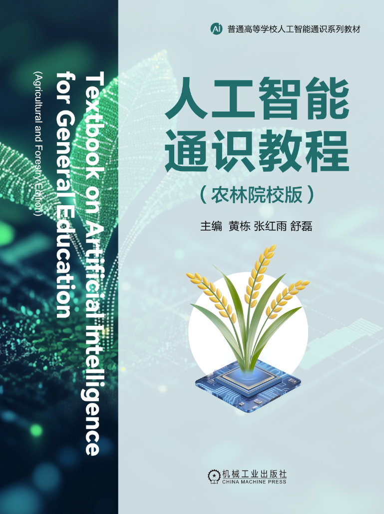

立足"人工智能+农业"知识框架，构建面向农林院校的人工智能通识课程体系

本书从农林院校的特色视角出发，系统介绍了人工智能的基础技术及其应用，旨在帮助读者建立清晰的"人工智能 + 农业"的知识框架，并掌握相关技术的基本原理与实践方法。全书共八章，遵循"基础 → 技术应用 → 前沿展望"的逻辑架构编排，循序渐进地引导读者深入理解人工智能的发展趋势、关键技术及智慧农业应用案例。
第1章从人工智能与农业的演进历程切入，介绍相关概念、核心特征及关键技术体系，探讨人工智能如何赋能农业现代化。第2章讲解机器学习的基础知识，为后续人工智能技术的学习奠定理论基础。第3～7章详细介绍人工智能的若干关键技术及其应用，包括计算机视觉、大数据分析、物联网、区块链、生物信息学等。每章不仅阐述基础原理，还结合典型案例，展示其在农业生产与管理各环节的应用实践。第8章展望大模型时代的智慧农业，分析人工智能大模型的发展趋势及其对农业智能化的深远影响。
本书适用于高等院校农林类、理工类及其他专业有志于学习人工智能和智慧农业关键技术的本科生、研究生，可作为农林院校人工智能通识课程的教材。
购买链接（京东）：https://item.jd.com/15142564.html
涵盖人工智能基础概念、核心算法等通识讲解，亦提供多个方向关键技术及其实际应用案例的进阶性、系统性介绍。
在阐述人工智能关键技术时，辅以大量农业领域的实际案例，旨在帮助读者结合具体应用场景，深刻理解人工智能技术的应用价值。
内容编排由浅入深，采用模块化设计，既适合初学者入门，也适合具备一定技术基础的读者进行深入学习。
（有开课需求的单位，请发邮件至 ai4agr@163.com 索取完整版PPT文件和授课视频等相关资源，并附教材选用信息与必要佐证）
本章概述农业技术的发展历程，从刀耕火种到现代化智慧农业，探讨农业如何在不同时期科学技术的推动下不断演进，并深刻影响社会经济发展。聚焦人工智能与农业的结合，并探讨智慧农业的主要概念、发展趋势及关键技术。本章力求提供对智慧农业的整体认知框架，并为后续章节的进一步学习打下基础。
本章首先介绍机器学习的基本概念，讲解其关键要素，包括模型、学习准则和优化算法。阐述农业应用中常见的分类、回归、聚类等算法模型，并探讨集成学习、强化学习、多模态学习和迁移学习等前沿方向。
本章介绍计算机视觉在农业中的核心应用，讲解图像分类、目标检测、目标跟踪和实例分割等关键技术，并结合苹果叶片病害诊断、肉牛行为识别、牲畜生长监测等实际案例，帮助读者理解如何将计算机视觉技术应用到农业生产的不同环节。
本章介绍农业大数据的采集、清洗、存储和分析方法，并详细讲解数据分类、聚类、预测分析、知识图谱和可视化等关键技术。通过农产品市场预测、养殖规划、辅助定价、精准推荐等真实案例分析，讲解大数据如何赋能农业生产决策。
本章介绍物联网的主要架构，包括感知层、传输层和应用层，重点探讨物联网信息感知、信息传输、网络中间件等概念与技术，并结合太阳能杀虫灯物联网、光伏农场物联网等应用案例，系统展示农业物联网如何提升农业生产效率、优化资源配置，以及推动农业向绿色、可持续方向发展。
本章首先介绍区块链的基本概念和技术特性，包括共识机制、智能合约、加密算法等，并探讨区块链在农产品溯源、农业供应链金融和农业保险中的应用。结合案例分析，讲解区块链在保障农产品质量安全、提升农业供应链透明度和信用体系建设上的作用。
本章介绍农业组学、农业生物数据库、农业知识工程等核心概念，重点探讨生物信息技术如何在农作物育种、畜禽选育等领域发挥重要作用，并结合育种案例，分析农业生物信息学的应用现状和未来发展趋势。
本章介绍人工智能大模型的发展历程、应用方式、模型幻觉等，探讨其在农业中的潜在应用，并展望大模型时代下智慧农业的未来发展路径。
面向全校不同专业学生，覆盖基础认知、技术领域与大模型前沿。